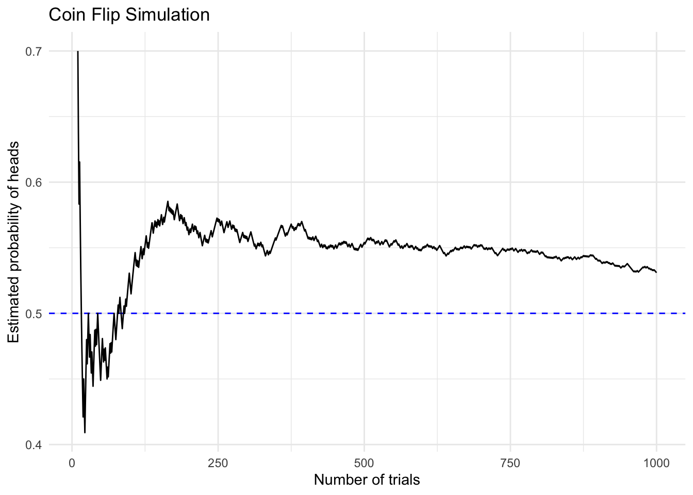
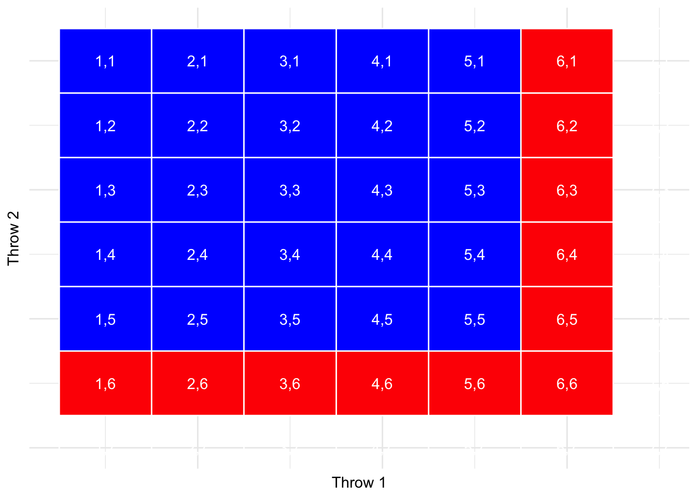

Compute relative frequency and empirical probability
Understand probability rules for events and combinations
Explain the law of large numbers
Understand conditional probability and independence
Use Bayes’ theorem for real-world applications
This lecture is adapted from Chapters 6 and 7 of Poldrack (2023).
These learning objectives are carefully chosen to focus on practical understanding rather than mathematical rigor. They align with the chapter’s goals while remaining accessible to non-technical students.
Key teaching points:
Emphasize practical understanding over mathematical formalism
Focus on concepts that will be useful in business and data analysis
Build foundation for later statistical concepts
5 Probability
5.1 Introduction
Probability theory is the branch of mathematics that deals with chance and uncertainty. It forms an important part of the foundation for statistics, because it provides us with the mathematical tools to describe uncertain events.
Historical Origins
Developed by mathematicians studying gambling
Key advances from Pascal and Fermat’s correspondence
Evolved into fundamental tool for statistics
Modern Applications
Business decision-making under uncertainty
Weather forecasting and risk assessment
Medical diagnosis and testing
Data analysis and machine learning
The study of probability arose in part due to interest in understanding games of chance, like cards or dice. These games provide useful examples of many statistical concepts, because when we repeat these games the likelihood of different outcomes remains (mostly) the same.
Historical context:
Early probability theory developed by mathematicians studying gambling
Pascal and Fermat’s correspondence about gambling problems
Evolution into a fundamental tool for statistics and data analysis
Key points to emphasize:
Probability helps us quantify uncertainty
Games of chance provide consistent, repeatable examples
Forms the foundation for all statistical analysis
Relevant to business decisions under uncertainty
Teaching tip: Start by asking students about their intuitive understanding of probability - they likely encounter it daily in weather forecasts, sports statistics, or business reports.
Common misconceptions to address:
Probability is not just about gambling
While based in mathematics, focus will be on practical understanding
Importance in modern data analysis and decision making
5.2 What is Probability?
A number describing the likelihood of an event occurring
Ranges from 0 (impossibility) to 1 (certainty)
Sometimes expressed as percentages (0% to 100%)
Examples from everyday life:
Weather forecast: “20% chance of rain today”
Sports: Steph Curry’s 91% free throw success rate
Medical tests: PSA test with 80% sensitivity
Informally, we usually think of probability as a number that describes the likelihood of some event occurring, which ranges from zero (impossibility) to one (certainty). Sometimes probabilities will instead be expressed in percentages, which range from zero to one hundred.
Key concepts to emphasize:
Probability scale:
0 = impossible (e.g., rolling a 7 on a six-sided die)
1 = certain (e.g., rolling a number between 1 and 6 on a six-sided die)
Most real-world events fall between these extremes
Everyday encounters with probability:
Weather forecasts: Percentage chance of rain
Sports statistics: Player performance rates
Medical tests: Accuracy rates
Insurance: Risk assessments
Common misconceptions:
A 20% chance of rain doesn’t mean it will rain 20% of the day
Probabilities don’t predict individual outcomes, only long-term patterns
Even very unlikely events can happen (and do happen regularly)
Historical context:
Early probability theory developed through analysis of games of chance
Modern applications far beyond gambling
Critical role in scientific research and data analysis
Teaching tips:
Ask students about their daily encounters with probability
Discuss how they interpret weather forecasts
Challenge intuitive misconceptions about probability
Connect to real-world decision-making under uncertainty
Time allocation: Spend about 3-4 minutes on this slide to establish fundamental concepts that will be built upon throughout the lecture.
To formalize probability theory, we need these precise definitions:
An experiment is any activity that produces or observes an outcome. Examples are flipping a coin, rolling a 6-sided die, or trying a new route to work to see if it’s faster than the old route.
The sample space is the set of possible outcomes for an experiment. We represent these by listing them within a set of squiggly brackets. For a coin flip, the sample space is {heads, tails}. For a six-sided die, the sample space is each of the possible numbers that can appear: {1,2,3,4,5,6}. For the amount of time it takes to get to work, the sample space is all possible real numbers greater than zero (since it can’t take a negative amount of time to get somewhere, at least not yet).
An event is a subset of the sample space. In principle it could be one or more of possible outcomes in the sample space, but here we will focus primarily on elementary events which consist of exactly one possible outcome.
5.4 Formal Properties of Probability
Kolmogorov’s axioms define what makes a value a probability:
These formal features of probability were first defined by the Russian mathematician Andrei Kolmogorov. These are the features that a value has to have if it is going to be a probability.
Let’s say that we have a sample space defined by N independent events, \({E_1, E_2, ... , E_N}\), and \(X\) is a random variable denoting which of the events has occurred. \(\mathrm{P}(X=E_i)\) is the probability of event \(i\).
The second point means that if we take the probability of each Ei and add them up, they must sum to 1. The third point is implied by the second; since they must sum to one, and they can’t be negative, then any particular probability cannot exceed one.
Probability: Chance of exactly that many successes
CumulativeProbability: Chance of that many or fewer successes
Key Insights:
Most likely outcome: 4 successes (0.6853)
Very unlikely to make 0-2 shots (0.0421)
Shows why Curry is considered elite
Personal Belief:
Used when we can’t do the actual experiment
Example: What if Bernie Sanders had been the Democratic nominee in 2016?
Based on knowledge of politics, polls, historical data
Limitations: Subjective, can vary between experts
Often the only available method for unique events
Empirical Frequency:
Most scientific approach when data is available
San Francisco rain example:
Define the experiment: Check daily rain data
Count outcomes: 73 rainy days in 2017
Calculate probability: 73/365 = 0.2
Advantages:
Based on actual data
Can be verified and repeated
Limitations:
Requires sufficient data
Past data may not predict future events
Sample size affects accuracy
Classical Probability:
Based on equally likely outcomes
Examples from games of chance:
Die rolls: Each number has 1/6 probability
Coin flips: Heads and tails each 1/2
Advantages:
Can calculate without data collection
Precise mathematical basis
Limitations:
Requires truly equal probabilities
Rare in real-world situations
Teaching tips:
Start with personal belief examples to engage students
Use San Francisco rain data to show how empirical probability works
Use dice/coins to demonstrate classical probability
Emphasize that different methods suit different situations
Time allocation: 8 minutes for this section
2-3 minutes for personal belief
3-4 minutes for empirical frequency with SF example
2-3 minutes for classical probability
5.7 Law of Large Numbers
As we increase the number of trials, our empirical probability approaches the true probability.
Code
set.seed(12345)nsamples <-1000sampDf <-tibble(trial_number =seq(nsamples),outcomes =rbinom(nsamples, 1, 0.5)) |>mutate(mean_probability =cumsum(outcomes) /seq_along(outcomes))ggplot(sampDf |>slice(10:nsamples), aes(x = trial_number, y = mean_probability)) +geom_hline(yintercept =0.5, color ="blue", linetype ="dashed") +geom_line() +labs(x ="Number of trials",y ="Estimated probability of heads",title ="Coin Flip Simulation" ) +theme_minimal()

Understanding the Graph:
Blue line: True probability (0.5)
Black line: Observed probability
High variability with small samples
Converges to true value over time
The “Law of Small Numbers”:
Common mistake: treating small samples like large ones
Term coined by Kahneman and Tversky
Even trained researchers make this error
Early results can be misleading
Real-World Example: 2017 Alabama Senate Election
Early results highly volatile
Initial large lead for Jones
Switched to Moore leading
Finally Jones won
Perfect illustration of why we need sufficient data
Applies to:
Opinion polls
Medical studies
Market research
The Law of Large Numbers is a fundamental principle in probability theory that helps us understand why empirical probability works. It shows that as we increase our sample size, our observed probability gets closer to the true probability.
Key Points: 1. Coin Flip Simulation:
Blue dashed line shows true probability (0.5)
Black line shows observed probability
Notice high variability with small samples
Convergence to true probability with more flips
Alabama Senate Election Example:
December 2017 special election between Doug Jones and Roy Moore
Early in the evening, vote counts were especially volatile
Initial large lead for Jones
Switched to long period where Moore had the lead
Finally Jones took the lead to win the race
Perfect illustration of why early results can be misleading
The “Law of Small Numbers”:
Term coined by Kahneman and Tversky
Common mistake: treating small samples like large ones
Even trained researchers make this error
Important implications for research and decision-making
Practical Implications:
Need large samples for reliable probability estimates
Early results or small samples can be very misleading
Particularly important in:
Opinion polls
Medical studies
Market research
Quality control
Teaching Tips:
Use interactive examples to demonstrate variability
Connect to students’ experience with sports statistics
Discuss implications for research and decision-making
Emphasize why we need sufficient data for reliable conclusions
Time allocation: 5 minutes
2 minutes for coin flip simulation
2 minutes for Alabama election example
1 minute for implications and discussion
5.8 Classical Probability: de Méré’s Problem
A famous gambling problem that helped develop probability theory:
First Game: At least one six in four dice rolls
de Méré’s calculation: \(4 \cdot \frac{1}{6} = 2/3\)
Actual probability: \(1 - \left( \frac{5}{6} \right)^4 = 0.517\)
He made money on this bet!
Second Game: At least one double-six in 24 rolls of two dice
de Méré’s calculation: \(24 \cdot \frac{1}{36} = 2/3\)
Actual probability: \(1 - \left( \frac{35}{36} \right)^{24} = 0.491\)
He lost money on this bet
5.9 de Méré’s Problem: Visual Analysis
Code
imgmtx <-matrix(0, nrow =6, ncol =6) imgmtx[, 1] <-1imgmtx[6, ] <-1plot <- imgmtx |>melt() |>ggplot(aes(Var1, Var2, fill = value)) +scale_fill_gradientn(colours=c("#0000FFFF","#FFFFFFFF","#FF0000FF")) +geom_raster(interpolate =FALSE)for (i inseq(0.5, 6.5)) { plot <- plot +geom_hline(yintercept = i, color ="white") plot <- plot +geom_vline(xintercept = i, color ="white")for (j inseq(0.5, 6.5)) { plot <- plot +annotate("text", x = i +0.5, y =6.5- j,label =sprintf("%d,%d", i +0.5, j +0.5), color ="white") }}plot +theme_minimal() +theme(axis.line =element_blank(), axis.text.x =element_blank(),axis.text.y =element_blank(), axis.ticks =element_blank(),legend.position ="none" ) +labs(x ="Throw 1",y ="Throw 2" )

Matrix shows all possible outcomes of two dice throws
Red cells: Getting a six on either throw
Blue cells: No sixes
White cell (6,6): Double six counted only once
Shows why simple addition is wrong
This historical example introduces several key probability concepts:
The Problem:
Chevalier de Méré was a French gambler
Played two different dice games
Consulted mathematician Blaise Pascal
Led to development of probability theory
de Méré’s Error:
Simply added individual probabilities
Didn’t account for overlap in multiple events
Shows why we need formal probability rules
Common mistake even today
Pascal’s Solution:
Instead of calculating success directly
Calculated probability of no success
Then used complement rule: \(\mathrm{P(success)} = 1 - \mathrm{P(no success)}\)
For first game: \(1 - \left( \frac{5}{6} \right)^4 = 0.517\)
For second game: \(1 - \left( \frac{35}{36} \right)^{24} = 0.491\)
Key Lessons:
Simple addition of probabilities often wrong
Multiple events require careful calculation
Sometimes easier to calculate complement
Small differences in probability matter
Mathematical analysis can reveal gambling errors
Teaching Tips:
Use this to introduce probability rules
Show why intuition can be misleading
Demonstrate practical value of mathematical analysis
Connect to modern probability applications
Time allocation: 7 minutes
2 minutes for historical context
3 minutes for calculations
2 minutes for implications
5.10 Conditional Probability
The probability of an event occurring, given that another event has occurred.
Formula: \(P(A|B) = \frac{P(A \cap B)}{P(B)}\)
\(P(A|B)\) reads as “probability of A given B”
\(P(A \cap B)\) is the joint probability
\(P(B)\) is the overall probability of B
Visual Representation:
Total population splits into groups (e.g., voters by party)
Each group further splits by outcome (e.g., voting choice)
Conditional probability focuses on one branch
5.11 Health Data Example
NHANES data on physical activity and diabetes:
Code
# Summarize NHANES data for diabetes and physical activityNHANES_diabetes_activity <- NHANES |>distinct(ID, .keep_all =TRUE) |>drop_na(PhysActive, Diabetes)NHANES_diabetes_stats_by_activity <- NHANES_diabetes_activity |>count(Diabetes, PhysActive) |>mutate(prob = n /sum(n) ) kable(NHANES_diabetes_stats_by_activity, caption='Joint probabilities for Diabetes and Physical Activity')
Joint probabilities for Diabetes and Physical Activity
Diabetes
PhysActive
n
prob
No
No
2123
0.3900423
No
Yes
2770
0.5089105
Yes
No
349
0.0641191
Yes
Yes
201
0.0369282
Understanding the Data:
Joint probabilities show overlap between conditions
Can calculate: \(P(diabetes|inactive)\)
Shows real-world health relationships
Key Insights:
Physical activity associated with lower diabetes risk
Example of how conditional probability informs health research
Useful for public health recommendations
So far we have limited ourselves to simple probabilities - that is, the probability of a single event or combination of events. However, we often wish to determine the probability of some event given that some other event has occurred, which are known as conditional probabilities.
Let’s take the 2016 US Presidential election as an example. There are two simple probabilities that we could use to describe the electorate. First, we know the probability that a voter in the US is affiliated with the Republican party: p(Republican) = 0.44. We also know the probability that a voter cast their vote in favor of Donald Trump: p(Trump voter)=0.46. However, let’s say that we want to know the following: What is the probability that a person cast their vote for Donald Trump, given that they are a Republican?
To compute the conditional probability of A given B (which we write as P(A|B), “probability of A, given B”), we need to know the joint probability (that is, the probability of both A and B occurring) as well as the overall probability of B.
5.12 Independence
Two events are independent if:
\(P(A|B) = P(A)\)
Example 1: Political Independence
California vs proposed state of Jefferson
\(P(Jeffersonian) = 0.014\)
\(P(Californian) = 0.986\)
Not independent: If you’re Jeffersonian, you can’t be Californian!
5.13 Independence: Health Example
NHANES data on physical activity and mental health:
Code
# compute probabilities for mental health and physical activityNHANES_adult <- NHANES |> dplyr::filter( Age >=18,!is.na(PhysActive),!is.na(DaysMentHlthBad) ) |>mutate(badMentalHealth = DaysMentHlthBad >7,badMentalHealth =case_when( badMentalHealth ==TRUE~"Bad Mental Health", badMentalHealth ==FALSE~"Good Mental Health" )) NHANES_mentalhealth_by_physactive_counts <- NHANES_adult |>tabyl(PhysActive, badMentalHealth) |>adorn_totals(c("row", "col"))kable(NHANES_mentalhealth_by_physactive_counts, caption='Mental health status by physical activity level')
Mental health status by physical activity level
PhysActive
Bad Mental Health
Good Mental Health
Total
No
629
2510
3139
Yes
471
3095
3566
Total
1100
5605
6705
Testing Independence:
Compare \(P(bad\ mental\ health|active)\) vs \(P(bad\ mental\ health)\)
If equal, variables would be independent
Data shows they are not independent
Physical and mental health are related
The term “independent” has a very specific meaning in statistics, which is somewhat different from the common usage of the term. Statistical independence between two variables means that knowing the value of one variable doesn’t tell us anything about the value of the other.
Looking at it this way, we see that many cases of what we would call “independence” in the real world are not actually statistically independent. For example, there is currently a move by a small group of California citizens to declare a new independent state called Jefferson, which would comprise a number of counties in northern California and Oregon. If this were to happen, then the probability that a current California resident would now live in the state of Jefferson would be P(Jeffersonian)=0.014, whereas the probability that they would remain a California resident would be P(Californian)=0.986.
The new states might be politically independent, but they would not be statistically independent, because if we know that a person is Jeffersonian, then we can be sure that they are not Californian! Statistical independence refers to the case where one cannot predict anything about one variable from the value of another variable. For example, knowing a person’s hair color is unlikely to tell you whether they prefer chocolate or strawberry ice cream.
5.14 Bayes’ Rule
A powerful tool for updating probabilities based on new evidence:
In many cases, we know \(\mathrm{P(A|B)}\) but we really want to know \(\mathrm{P(B|A)}\). This commonly occurs in medical screening, where we know \(\mathrm{P(positive\ test\ result|disease)}\) but what we want to know is \(\mathrm{P(disease|positive\ test\ result)}\).
For example, some doctors recommend that men over the age of 50 undergo screening using a test called prostate specific antigen (PSA) to screen for possible prostate cancer. Before a test is approved for use in medical practice, the manufacturer needs to test two aspects of the test’s performance:
Sensitivity - how likely is it to find the disease when it is present
Specificity - how likely is it to give a negative result when there is no disease present
For the PSA test, sensitivity is about 80% and specificity is about 70%. However, these don’t answer the question that the physician wants to answer for any particular patient: what is the likelihood that they actually have cancer, given that the test comes back positive?
Using Bayes’ rule with these numbers: \(\mathrm{P(cancer|test)} = \frac{(0.8 \cdot 0.058)}{(0.8 \cdot 0.058 + 0.3 \cdot 0.942)} = 0.14\)
That’s pretty small – do you find that surprising? Many people do, and in fact there is a substantial psychological literature showing that people systematically neglect base rates (i.e. overall prevalence) in their judgments.
5.15 Odds and Odds Ratios
Converting between probability and odds:
Formulas:
Odds = \(\frac{P(event)}{P(not\ event)}\)
Probability = \(\frac{odds}{1 + odds}\)
Odds Ratio = \(\frac{posterior\ odds}{prior\ odds}\)
PSA Test Example Calculations:
Prior odds = \(\frac{0.058}{1-0.058} = 0.061\)
Posterior odds = \(\frac{0.14}{1-0.14} = 0.16\)
Odds ratio = \(\frac{0.16}{0.061} = 2.62\)
Interpreting Results:
Prior odds: 1:16 chance of cancer before test
Posterior odds: 1:6 chance after positive test
Odds ratio of 2.62 means:
Risk increased 2.62 times
But absolute risk still low (14%)
Shows why screening rare conditions is problematic
The result in the PSA example showed that the likelihood that the individual has cancer based on a positive PSA test result is still fairly low (0.14), even though it’s more than twice as big as it was before we knew the test result. We would often like to quantify the relation between probabilities more directly, which we can do by converting them into odds which express the relative likelihood of something happening or not.
This tells us that the odds of having cancer are increased by 2.62 times given the positive test result. An odds ratio is an example of what we will later call an effect size, which is a way of quantifying how relatively large any particular statistical effect is.
As an aside, this is a reason why many medical researchers have become increasingly wary of the use of widespread screening tests for relatively uncommon conditions; most positive results will turn out to be false positives, resulting in unnecessary followup tests with possible complications, not to mention added stress for the patient.
5.16 Summary
Probability quantifies uncertainty
Three ways to determine probabilities
Conditional probability for related events
Bayes’ rule for updating beliefs
Importance of base rates
Key takeaways from this lecture:
Probability theory provides mathematical tools to describe uncertain events
We can determine probabilities through:
Personal belief (subjective but sometimes necessary)
Empirical frequency (based on observed data)
Classical probability (based on equally likely outcomes)
The law of large numbers shows how empirical probability converges to true probability
Conditional probability helps us understand related events
Bayes’ rule allows us to update probabilities based on new evidence
Base rates are crucial but often neglected in probability judgments
5.17 Questions?
Thank you for your attention!
Suggested readings for students interested in learning more:
The Drunkard’s Walk: How Randomness Rules Our Lives, by Leonard Mlodinow
Ten Great Ideas about Chance, by Persi Diaconis and Brian Skyrms
![]()